Document prepared by: Department of Public Works, the Environment and Urban Planning — Environment Department.
Pursuant to paragraphs 24 and 25 and Article 4 of Decision 1/CP.21, and to Decision 4/CMA.1.
The Principality of Monaco is a city-state of 208 hectares whose diversified economy is mainly based on services, construction, tourism and banking.
Since His accession in 2005, H.S.H. Prince Albert II has made the protection of the environment a priority of the policy conducted by His Government, both nationally and internationally.
The Principality of Monaco ratified the United Nations Framework Convention on Climate Change (UNFCCC) on 20 November 1992 and the Kyoto Protocol on 27 February 2006.
Listed in Annex 1 of the Convention and having committed to reducing its emissions by 8% compared to the 1990 level during the first commitment period of the Kyoto Protocol, the Principality not only met its commitments but exceeded them by reducing its emissions by 13.18%1.
Monaco continued its commitment by accepting the Doha Amendment on 27 December 2013. Monaco also achieved its objective of reducing its emissions by an average of 22% over the period 2013-2020 (the second commitment period of the Kyoto Protocol).
By Law No. 1.432 of 12 October 2016, H.S.H. Prince Albert II approved the ratification, by the Principality of Monaco, of the Paris Agreement to the United Nations Framework Convention on Climate Change, adopted on 12 December 2015 and entered into force on 4 November 2016. The ratification is dated 24 October 2016.
As part of the 2020 revision of its first Nationally Determined Contribution, the Principality increased its initial commitments and set itself the objective of reducing its greenhouse gas emissions by 55% by 2030 compared to 1990. Subsequently, this objective was integrated into national regulations.
Under this Nationally Determined Contribution, the Principality of Monaco has set itself the objective of reducing its greenhouse gas emissions by 67.6% by 2035 (compared to 1990).
The Principality of Monaco has also committed to achieving carbon neutrality by 2050.
Aware of the eminently collective nature of the emission-reduction challenge, the Principality of Monaco wishes to make its full contribution to the common effort by respecting the trajectories of the IPCC (Intergovernmental Panel on Climate Change) to limit the average rise in global temperatures to less than 1.5°C above pre-industrial levels.
The Principality of Monaco is a State bordering the Mediterranean Sea, enclaved within French territory along the Côte d'Azur, halfway between Nice and the Italian border. The Principality borders four French communes of the Alpes-Maritimes Department (Cap-d'Ail, La Turbie, Beausoleil and Roquebrune-Cap-Martin) and has a frontage on the Mediterranean.
The geographical coordinates of the Principality (at the Oceanographic Museum) are 43°43'49''N and 7°25'36''E.
The territory takes the form of a narrow coastal strip at the foot of a 7 km² watershed, surrounded by a ring of high reliefs. Its area is 208 hectares, of which nearly 40 have been reclaimed from the sea over the past 50 years.
Its territorial waters form a strip extending 12 nautical miles offshore, with a width corresponding to the Principality's coastal frontage (about 3 km). The surface of the territorial waters is approximately 71 km², which is significantly larger than the country's land area.
The Principality is the second smallest independent State in the world, after the Vatican.
The Principality of Monaco is established on a narrow coastal strip. All buildings are therefore located very close to the sea (less than 800 m). This situation, combined with significant marine depths available near the coast, has contributed to the major development of seawater heat pumps. The first installation was carried out in 1963, and this technology now constitutes the leading local source of energy production.
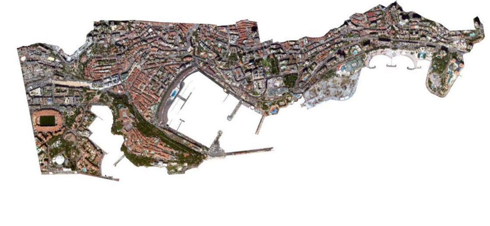
The Principality of Monaco is located in the north of the western Mediterranean and benefits from a temperate climate, characterised by hot, dry summers and mild, wet winters. The territory lies at the interface of a vast south-facing slope bathed by the sea and dominated by mountains exposed to the south. Temperatures are under the direct influence of the sea.
The average temperature is 16.5°C (1981-2010 normals), with an annual thermal amplitude of less than 15°C. Average annual rainfall is 735.5 mm, with a distribution characteristic of the Mediterranean climate — the heaviest precipitation occurring in autumn and spring.
All data recorded across the Mediterranean basin indicate warming during the 20th century and an acceleration in recent decades.
At the basin scale, average annual temperatures are now 1.5°C higher than late 19th-century levels. Warming accelerated after the 1980s and is increasing at a rate higher than the global average (Lelieveld et al. 2012; Lionello et al. 2012a; Zittis and Hadjinicolaou 2017; Cramer et al. 2018; Lionello and Scarascia 2018; Zittis et al. 2019).
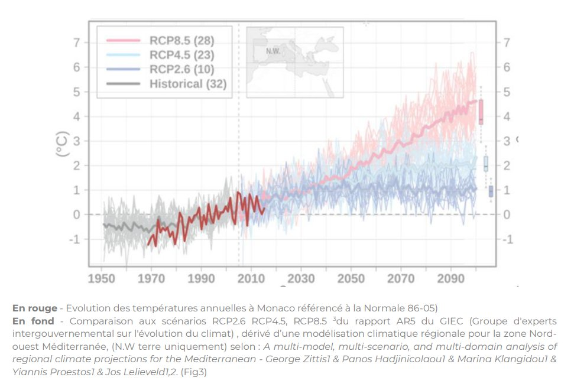
Temperatures observed in Monaco since the early 1970s corroborate these observations and show a steady rise of 0.3°C per decade. This rise is more pronounced for minimum temperatures (+0.4°C) than for maximum temperatures. Furthermore, the warmest years have all been observed after 2000.
Given its maritime character and coastal frontage, the Principality of Monaco is directly exposed to a rise in the level of the Mediterranean Sea due to climate change. Sea levels have been measured there since 1999 by a coastal digital tide gauge operated by the Environment Department in collaboration with the French Naval Hydrographic and Oceanographic Service (SHOM).
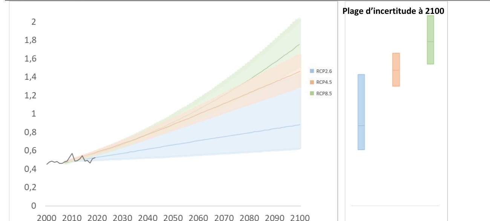
On the northern side of the western Mediterranean, a rise of 1 to 2 mm/year was observed between 1970 and 2004. The Ocean & Climate Platform Report indicates that sea level rise accelerated to 3.6 mm per year from the 1990s, compared with 1.4 mm per year previously.
Recordings made in Monaco confirm this trend: the measured rise has been on the order of 3.5 mm per decade since 2000. Despite a slowdown over the 2010-2020 decade, current water levels are in line with the trend predicted by the IPCC increase scenarios.
The Monegasque population (residents and non-residents) totalled 9,883 nationals as of 31 December 2024.
The resident population of Monaco was estimated at 38,423 inhabitants on 31 December 2024. The population is cosmopolitan, with 145 different nationalities represented, including 9,262 nationals (Monegasques).
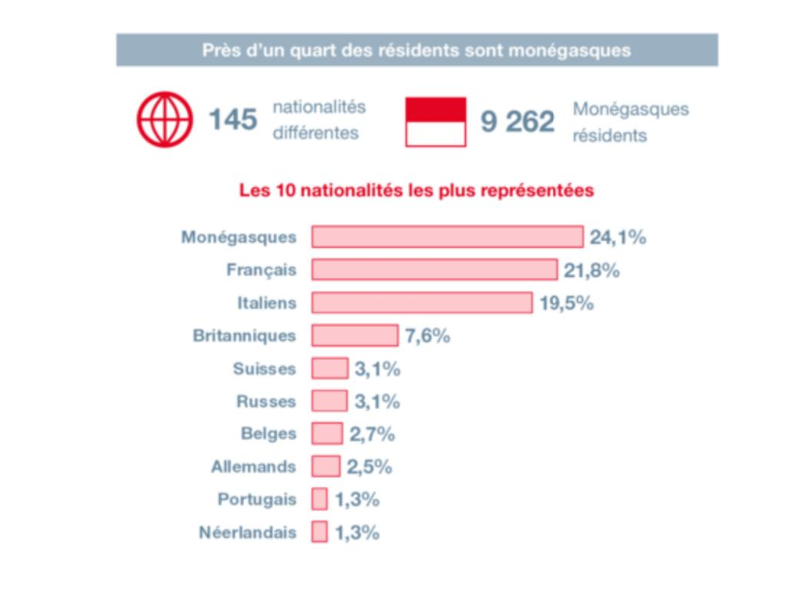
The Principality is a centre of strong economic expansion over the past ten years. It constitutes a significant employment hub for the neighbouring French and Italian regions.
Monaco's GDP for 2023 amounted to €9.24 billion, an increase of 5% compared to 2022. It thus erases the decline of 2020 and resumes the growth trend of recent years.
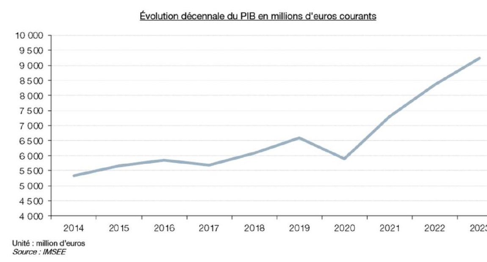
Monaco's GDP stood at €9.24 billion in 2023, compared with €8.36 billion in 2022. Its inflation-adjusted growth thus reaches 5.0%.
Since 2014, GDP has grown by nearly 50%, while growth was 27% worldwide, 14% in the euro area and about 10% in France.
The situation of the Principality of Monaco is atypical with respect to both its resident population and its salaried population. Indeed, for 38,367 residents there are 65,680 employees, nearly 87% of whom are domiciled outside Monaco.
This very singular situation makes comparisons difficult and renders some traditional international indicators inappropriate. This is particularly the case for the classic indicator of GDP per inhabitant.
In order to situate the Principality within its environment and international context, two types of per-individual GDP are calculated: a "per capita" GDP, calculated since 2005, and a GDP per employee, calculated since 2010.
Per capita GDP is more specifically intended for international comparisons. The population used for its calculation is the sum of residents and non-resident employees of Monaco. Per capita GDP stood at €98,830 in current value in 2023. This figure is comparable to that of Northern European countries, reflecting a high standard of living.
GDP per employee, for its part, is an indicator used to compare countries' productivity levels. It amounted to €145,625 in 2023.
More than half of Monaco's GDP (52.3%) is generated by three sectors:
The Principality of Monaco is a net importer of energy. None of the energy produced is sold externally. Total final energy consumption in 2023 was approximately 964 GWh.
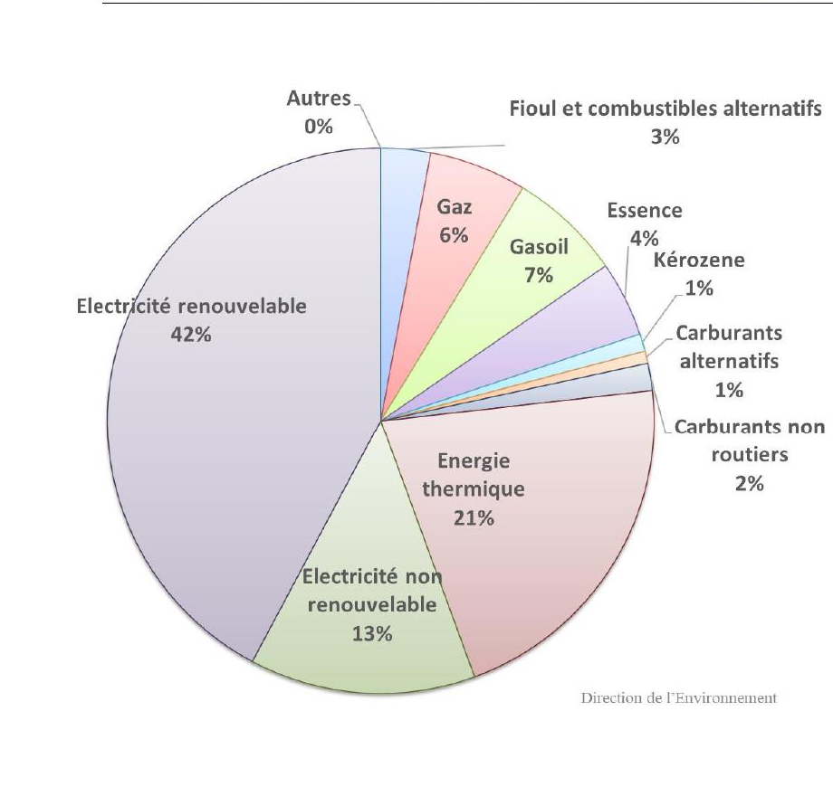
More than half of the total energy consumed in Monaco is attributable to electricity used for private and public purposes — mainly housing, commercial and industrial installations, public buildings and facilities (hospitals, schools, etc.) and street lighting.
The energy produced in Monaco comes mainly from heat pumps and the waste-to-energy plant. Although still secondary, photovoltaic electricity production is growing strongly.
In 2023, 63.1% of the total energy consumed in Monaco came from renewable sources (local renewable energy 22%, electricity certified as guaranteed renewable 37.8%, fuels of biogenic origin 3.4%).
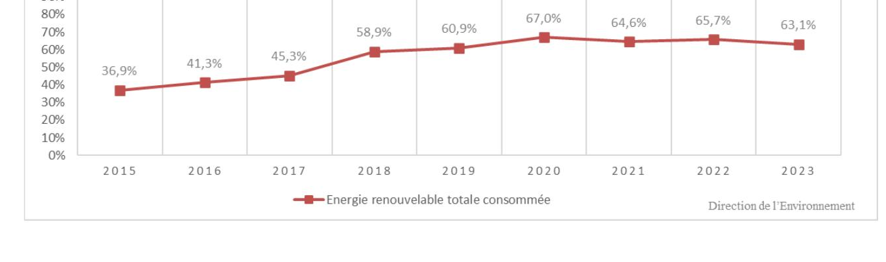
In order to assess the effect of policies and measures in terms of reducing the Principality's energy consumption, three indicators are monitored: energy intensity, energy consumption per inhabitant and energy consumption per capita.
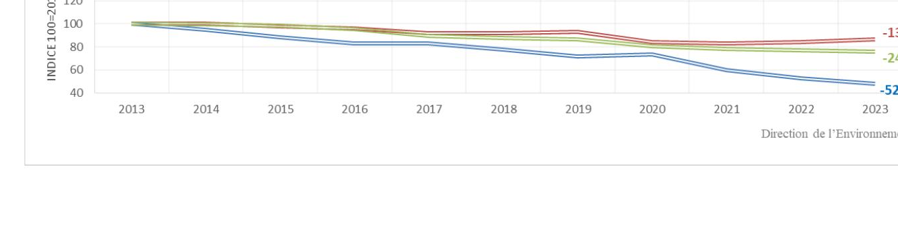
Between 2014 and 2023, analysis of climate trends reveals a progressive warming of marine temperatures, more pronounced at the surface than at depth. In the surface layers (-5 to -10 m), temperatures have risen by approximately 1°C, notably under the effect of heatwaves and extreme events.
At intermediate depths (-15 to -30 m), warming is more moderate, with some temperature stabilisation owing to the regulating action of ocean currents.
Finally, the deep layers (-35 to -55 m), although isolated, also show weak but perceptible signs of warming, despite occasional drops in temperature.
The Principality has carried out this continuous monitoring of the water column's temperature since 2003. Monitoring of this indicator is rarely undertaken at the international scale; the Principality is therefore a pioneer in this field.
Extreme events linked to climate change — particularly the abnormal heat episodes of 1999, 2003 and 2006 — have had devastating effects on Monegasque marine fauna. These heatwaves caused mass mortality among thermosensitive species, leading to partial or total necrosis of gorgonian colonies and the disappearance of some sponges (Spongia spp., Cacospongia spp.), as well as bryozoans and ascidians, thereby compromising marine biodiversity.
The gorgonians on the Spélugues drop-off, located between -9 m and -37 m depth, were particularly affected: the majority of individuals disappeared, causing an imbalance in the local ecosystem. Today, this species is only observed beyond 45 metres depth.
Moreover, these thermal anomalies also led to a significant decline of Monegasque red coral. Research carried out by the Monaco Scientific Centre (CSM) shows that this species, also sensitive to ocean acidification, is doubly threatened. Coral reefs, true bio-indicators of ocean health, thus highlight the scale of the ecological disturbances under way.
On land, the biodiversity of the Monegasque territory represents 1.2% of Mediterranean flora on 0.000085% of the total surface area.
Regular land-based inventories are carried out by the Environment Department and reveal an exceptional wealth of flora, insects and birds. The indigenous land flora of the Principality includes 346 species and subspecies, of which 6 endemic species and 18 species of high heritage value, in particular the Nivéole de Nice (Nice snowflake).
When new species are introduced, phytosanitary controls are carried out (bare roots) to limit the introduction of invasive species. However, despite these controls, new species are inevitably introduced into the territory.
In natural spaces, experts are already observing competition between imported exotic plants and endemic species.
The cliffs of the Rock are a wild zone serving as a refuge and nesting site for a number of migratory or sedentary bird species. Inventories list 60 bird species, including 10 protected at European level (European Birds Directive).
The presence of certain invasive species has increased in recent years, notably the Aedes albopictus mosquito and the Ostreopsis ovata alga.
The Principality of Monaco is highly exposed to the arrival of Aedes albopictus. Exotic plants present in the Principality, such as the Balisier (canna lily), are conducive to its development.
These mosquitoes appear earlier in the year and disappear later; their diapause is therefore becoming ever shorter. At the same time, a decline in the presence of Culex-type mosquitoes, which compete with "tiger" mosquitoes, is being observed.
The European Centre for Disease Prevention and Control (ECDC) first observed the presence of the Aedes albopictus mosquito on Monegasque territory in 2006.
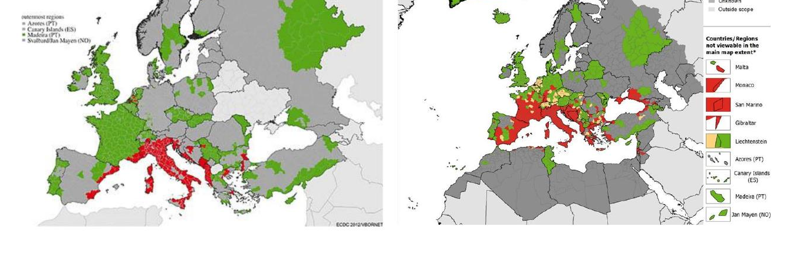
This mosquito is among the 100 most invasive species in the world. Chikungunya is now considered a "re-emerging" disease. Climate projections for the Monegasque territory show an increase in the number of months during which conditions would be favourable for virus transmission — 4 to 5 months in the Principality.
Since 2007, a surveillance system and preventive management of the risk associated with the presence of the Ostreopsis ovata alga have been in place. The appearance of the alga has been noted in the Mediterranean, but the public-health risk thresholds have never been reached in the Principality.
Another notable effect of climate change is the introduction of new species into local ecosystems. Several species originating from the south, previously absent or only present occasionally — such as the pine processionary caterpillar or the Mediterranean barracuda (Sphyraena viridensis) — have settled here.
In the Mediterranean, the warming of waters has led to the establishment of 5 to 10 new species per year, mainly originating from the Indo-Pacific, which disrupts local ecosystems.
Similarly, the rabbitfish (Siganus luridus), native to the Red Sea, is gradually settling in the northern Mediterranean basin. Tropical jellyfish, such as Rhopilema nomadica, have also extended northwards, becoming more frequent along the Spanish and French coasts. Finally, tropical fish species such as the painted comber (Serranus scriba) and the common dolphinfish (Coryphaena hippurus), once rarer in northern regions, are becoming increasingly common.
This phenomenon reflects a significant change in the composition of marine ecosystems in the Mediterranean, with important ecological and economic repercussions.
Managing the proliferation of certain invasive alien species has become a growing challenge, as they compete with native species for resources, thereby disrupting ecological balance.
Monaco's overall greenhouse gas (GHG) emissions decreased from 101.51 ktCO₂ equivalent in 1990 to 59.79 ktCO₂eq in 2023.
This change represents a 41.1% decrease in 2023 compared with 1990.
Over this period, emissions were relatively stable between 1990 and 2000. The maximum was reached in 1992 with emissions of 107.98 ktCO₂eq. From 2000 onwards, the trend has been generally decreasing.
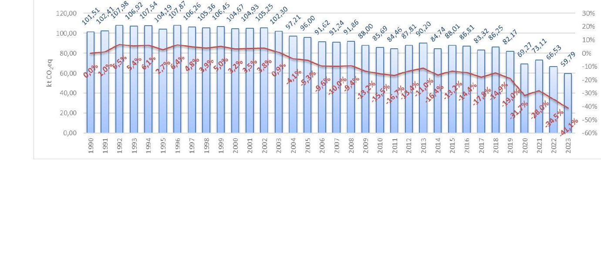
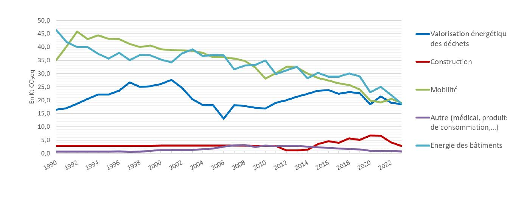
The evolution of GHG emissions by major sectors of activity is detailed below:
Waste-to-energy: includes emissions linked to waste incineration. Emissions in this sector increased by 12% between 1990 and 2023.
Construction: includes emissions related to non-road diesel, paints, foams, bitumen and wood treatments. Emissions in this sector increased by 1% between 1990 and 2023.
Mobility: includes emissions related to road fuels, fuels used for domestic navigation and national aviation, mobile air-conditioning gases, and automotive lubricants and additives. Emissions in this sector decreased by 46% between 1990 and 2023.
Other: includes emissions linked to refrigerator gases, gases used in medical inhalers and particle accelerators, pressurised containers (whipped-cream chargers) and foams. Emissions in this sector increased by 19% between 1990 and 2023.
Building energy: includes emissions linked to the combustion of domestic fuel oil and natural gas for heating and domestic hot water, heavy fuel oil and natural gas via the SeaWergie network, stationary air-conditioning gases, electrical transformer gases and natural-gas network losses. Emissions in this sector decreased by 60% between 1990 and 2023.
The chart presents the distribution of greenhouse gas emissions in 2023 by major sector of activity (inner ring) and by sub-category (outer ring).
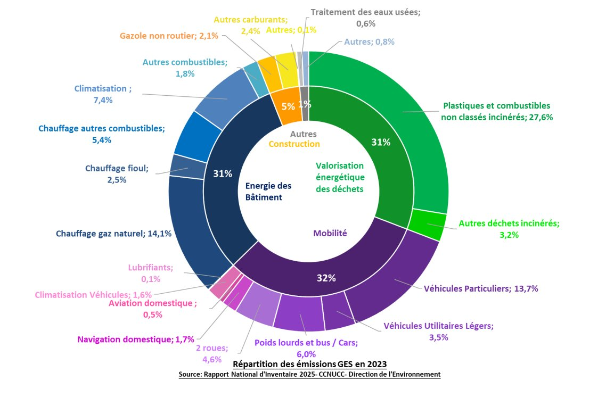
Emissions from the Energy sector amounted to 100.7 ktCO₂eq in 1990. They represent 53.4 ktCO₂eq in 2023, a change of -47%.
They correspond mainly to emissions linked to stationary combustion, transport and waste-to-energy.
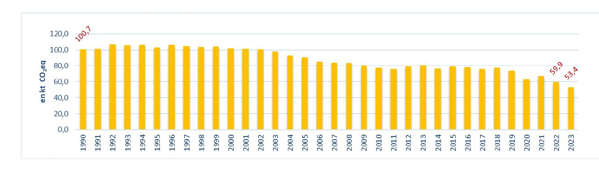
Emissions from the Industry sector (excluding transport) were 0.1 ktCO₂eq in 1990. They amount to 6.1 ktCO₂eq in 2023, a change of +4,067%.
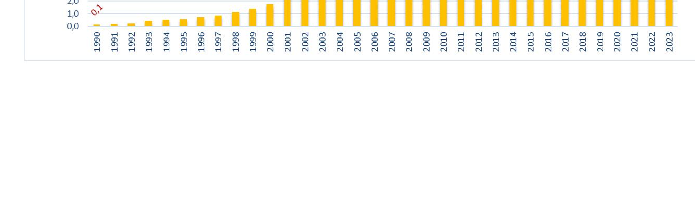
Emissions from the Land Use, Land-Use Change and Forestry sector were -0.11 ktCO₂eq in 1990 and represent -0.08 ktCO₂eq in 2023, a change of -30%.
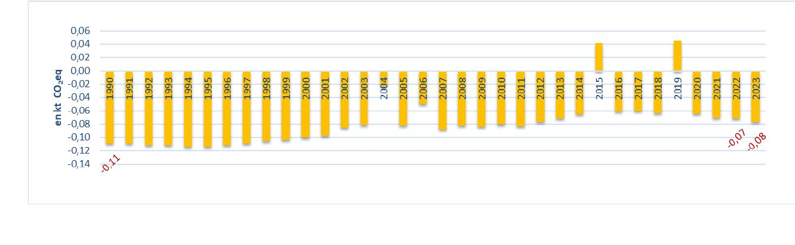
Emissions from the Waste sector amounted to 0.7 ktCO₂eq in 1990. They amount to 0.4 ktCO₂eq in 2023, a change of -46%. They correspond to emissions linked to wastewater treatment.
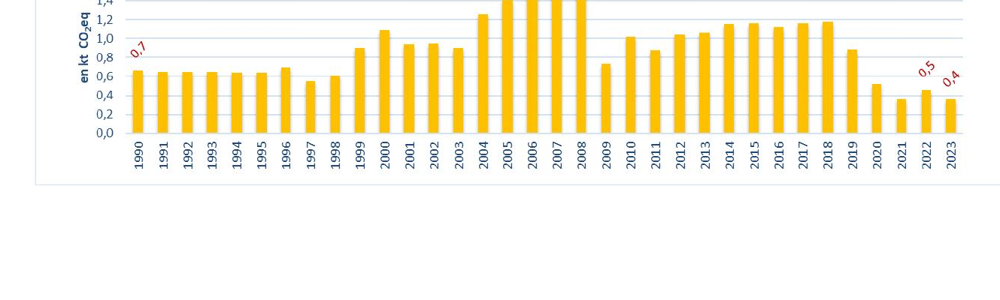
Emissions from the International Bunkers sector were 6.76 ktCO₂eq in 1990 and represent 11.26 ktCO₂eq in 2023, a change of +66.7%.
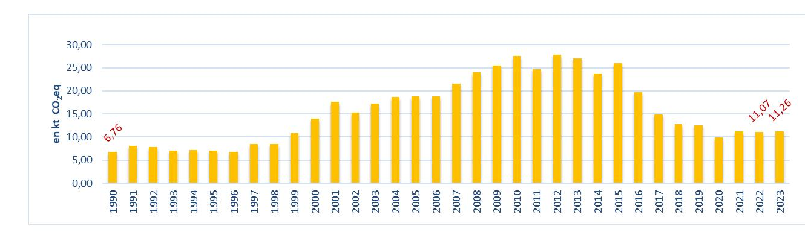
Under this Nationally Determined Contribution, the Principality of Monaco has set itself the objective of reducing its greenhouse gas emissions by -67.6% in 2035.
This Nationally Determined Contribution (NDC) covers the period 2031-2035.
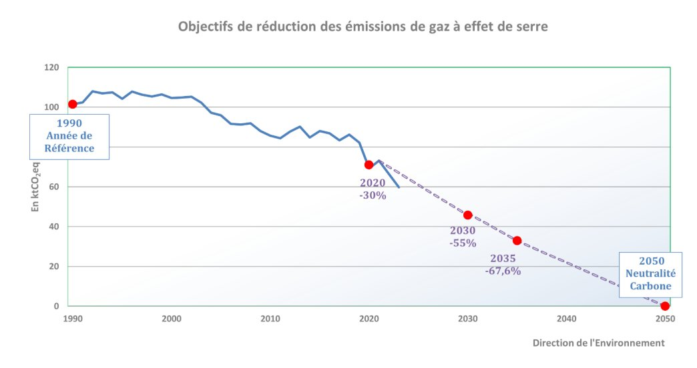
Monaco's commitment covers all territorial emissions, as reported in the National Inventory Reports.
It concerns all sectors: Energy, Industrial Processes and Product Use, Agriculture, Forestry and Other Land Use, and Waste.
It also covers all 7 gases: carbon dioxide (CO₂), methane (CH₄), nitrous oxide (N₂O), the fluorinated gases hydrofluorocarbons (HFCs) and perfluorocarbons (PFCs), sulphur hexafluoride (SF₆) and nitrogen trifluoride (NF₃).
The estimation of greenhouse gas emissions across all sectors is carried out in accordance with the 2006 IPCC Guidelines (GL 2006) for National Greenhouse Gas Inventories. The global warming potentials used are those published in the IPCC Fifth Assessment Report (IPCC AR5 – 2014).
The drafting of the Nationally Determined Contribution was carried out alongside the preparation of the 1st Biennial Transparency Report, the monitoring of the implementation of the Principality's energy-climate policy (Climate Air Energy Plan 2030), and the labelling of this policy by the European Energy Award (EEA), in order to ensure consistency and effectiveness between the climate objectives and the implementation of public policies.
In this context, public and private stakeholders as well as governmental authorities were consulted through various bodies and meetings.
The public policies adopted were designed to achieve the 2035 objective and to durably place the Principality on the trajectory towards carbon neutrality by 2050.
It should also be noted that the drafting of the NDC builds on the outcomes of the first Global Stocktake, assessed in light of the country's characteristics.
The assumptions and methodological approaches, including those relating to the estimation and accounting of anthropogenic greenhouse gas emissions, are those used in the National Inventory Reports in accordance with the IPCC guidelines.
Monitoring of the implementation of policies and measures will be carried out within the framework of the Climate Air Energy Plan governance and the European Energy Award labelling process.
Monitoring is updated twice a year and ministerial meetings are organised regularly, both as part of policy and measure implementation and as part of the preparation of National Inventory Reports and Biennial Transparency Reports.
Monitoring of the evolution of greenhouse gas emissions, energy indicators and the effect of policies and measures is the subject of formal communication at the highest level of State, through the National Inventory Reports and the other reports required under the Convention and the Paris Agreement.
Monaco's commitment to reducing greenhouse gas emissions has been reviewed and increased under this Nationally Determined Contribution.
The quantified GHG reduction commitment has thus moved from -55% by 2030 to -67.6% by 2035.
Monaco considers its commitment particularly ambitious in light of its national circumstances, in particular its 2 km² territory — a dense urban environment — and its particularly low emissions.
The policies and measures implemented cover all sectors at the origin of greenhouse gas emissions. Significant support policies have been put in place to accompany the population through the transitions necessary to meet the commitments and limit negative effects.
In the Special Report on the Impacts of Global Warming of 1.5°C, the IPCC4 determined the trajectory for limiting global warming to 1.5°C: under pathways that limit global warming to 1.5°C with no or minimal overshoot, net global anthropogenic CO₂ emissions decline by about 45% from 2010 levels by 2030 (interquartile range: 40-60%), reaching net zero around 2050.
In the synthesis report of the sixth assessment cycle5, reflected in decision 1/CMA.5 on the outcome of the first Global Stocktake, the IPCC specifies that to limit global warming to 1.5°C with no or minimal overshoot, global greenhouse gas emissions must be reduced significantly, rapidly and durably — more specifically by 43% by 2030, 60% by 2035 and 69% by 2040 compared with 2019 levels — and net zero emissions must be reached by 2050.
By deciding to reduce its greenhouse gas emissions by 67.6% in 2035 compared with 1990, the Principality of Monaco has chosen to align its commitment with this trajectory and to fully contribute to achieving the objective set out in Article 2 of the Convention — namely to stabilise greenhouse gas concentrations in the atmosphere at a level that prevents dangerous anthropogenic interference with the climate system.
The public policies that will be implemented up to 2035 aim to place the territory on a sustainable and continuous trend of reducing greenhouse gas emissions in order to achieve carbon neutrality in 2050.
The next decade will be characterised by an optimisation, consolidation and acceleration of public policies for decarbonising the national economy.
The Principality is implementing public policies covering primarily the three main sectors: building energy, transport and waste. These policies and measures are organisational, technical, regulatory or incentive-based.
The policies and measures implemented by the Principality of Monaco are part of the global efforts set out in decision 1/CMA.5 on the outcome of the first Global Stocktake, which aim in particular to:
Consumption of fossil fuels in buildings is one of the main sources of greenhouse gas emissions.
The priority axes developed by the Principality in this sector aim to decarbonise the energy consumed by buildings by transitioning to electricity or biogenic liquid fuels, as well as to improve their energy efficiency.
Monaco intends to increase the share of renewable or recovered energy in its energy mix, in particular through the creation of seawater district-heating-and-cooling (thalassothermic) networks, the recovery of waste heat, and the increase in solar thermal and photovoltaic production both within the territory and abroad (in proportion to electricity consumed locally). The supply of renewable electricity is a priority for the Government.
In addition, the decarbonisation of fossil energy will take the form of an increase in the biogenic share of fuels, or even by replacing part of them with new fuels that are 100% biogenic.
Monaco has already banned domestic fuel oil in all buildings. Substitute fuels must contain at least 30% biogenic content, and 10% of the gas consumed is guaranteed of biomethane origin.
The Principality intends to increase these minimum biogenic proportions and to ban new natural-gas-network connections in the short term. It is also envisaged to import only gas guaranteed of biomethane origin by 2035 at the latest.
Improving the energy and environmental performance of all existing and future buildings is also essential. The best energy is the energy not consumed.
Policies and measures simultaneously target the renovation of the existing building stock (envelopes and energy systems), uses and behavioural change, and sustainable construction methods for new buildings (adapted to the Mediterranean climate and Monaco's specificities), with the objective of optimising the energy efficiency of the entire building stock. To this end, each building in Monaco must undergo an energy audit.
This optimisation requires a progressive strengthening of regulatory thermal requirements for new buildings and renovations, as well as a prioritisation and increase of the annual renovation rate, supported by financial mechanisms.
Numerous public renovation aids have been deployed to encourage co-owners to renovate all or part of the built stock and to improve residents' comfort while increasing the energy efficiency of buildings (subsidised energy audit; assistance for a comprehensive renovation or for specific works such as changing the energy-production system, windows, roof insulation, photovoltaic panels or solar thermal), and to transition to decarbonised energy.
In addition, the Government supports the adaptation of construction methods to local climatic conditions through the "Monaco Mediterranean Sustainable Building" approach and through training of construction stakeholders in new techniques and technologies.
It should be noted that the Principality of Monaco has a strong interest in "blue energy" and in particular in thalassothermics, in order to replace fossil fuels. Thanks to its coastal frontage and the significant bathymetry available near the coast, this technology is particularly well suited to the territory. The studies conducted have shown the absence of environmental impact of water discharges on biodiversity.
The thalassothermic networks recently commissioned will, once all planned building connections are completed, reduce Monaco's GHG emissions by more than 10% by substituting fossil energy with renewable energy.
Policies and measures relating to transport mainly concern road transport. Monaco also has a heliport and three marinas.
Monaco is a major activity hub contiguous to the French department of the Alpes-Maritimes. This economic dynamism generates significant commuter flows (with France and Italy), as well as traffic induced by economic activity (external companies, deliveries). Monaco's services hub (hotels, sports facilities, education, etc.) attracts a large number of day visitors.
The Principality pursues two lines of action to reduce road transport's greenhouse gas emissions: decarbonising means of transport and reducing traffic on the territory.
The Princely Government strongly supports the substitution of internal-combustion vehicles by electric vehicles, through purchase incentives and significant development of charging infrastructure.
Electric vehicles benefit from free charging in public car parks and on-street, a discounted parking-subscription price, and exemption from the annual registration sticker fee.
At the start of 2025, eco-friendly vehicles (electric and hybrid) represented 19% of Monaco's vehicle fleet.
Urban thermal buses are being progressively replaced by electric buses, with a target of complete substitution by 2030. A similar shift has been initiated for refuse-collection trucks.
Although this substitution of fossil fuels improves the situation in terms of direct CO₂ emissions and air pollutants, it does not solve the problem of congestion on transport routes (which is the primary condition for the development of alternative modes) and is difficult to generalise (very high electricity consumption and power demand, fire risks in collective car parks, etc.).
The Government's second priority is therefore an absolute reduction in kilometres travelled by motorised individual transport, in favour of active modes and public transport.
Structuring actions will include in particular the creation of park-and-ride facilities at the borders and a multiplicity of alternative mobility solutions (support for walking and cycling through the strengthening of equipment and e-services).
In the field of air transport, the Principality of Monaco intends to substitute fossil fuels with biogenic fuels for all its domestic flights by 2035 and to progressively increase the biogenic share in fuels used for international flights.
Monaco's heliport is currently pursuing "Airport Carbon Accreditation" certification to better control its energy consumption and reduce its greenhouse gas emissions.
Monaco is also paying attention to the development of electric helicopters, which could constitute a clean solution for the flights on the regular Monaco – Nice (France) line, which represent around 60% of international flights recorded at Monaco's heliport.
Regarding navigation, the Principality has banned the use of heavy fuel oil in its territorial waters and is deploying shore-side electrical-supply systems for vessels in the ports. Studies are under way on the use of hydrogen by ships.
These policies will be supported by a progressive decarbonisation of fuels in line with European policies on the matter.
Lastly, the Government also intends to ban fossil fuels for non-road machinery and thus promote the use of electric equipment, or failing that, the use of biogenic fuels.
Since 2016, the Principality has been deploying an ambitious strategy to limit the amount of waste produced and to direct waste in priority towards material recovery. This strategy has been complemented by a "zero single-use plastic waste by 2030" policy.
In terms of reducing greenhouse gas emissions, Monaco's priority in this area is the reduction of plastic waste, whose incineration is responsible for the majority of this sector's emissions.
This must, however, be part of an overall and long-term policy that aims both at reducing all types of waste at source and at improving their recovery — material recovery first, and energy recovery second — with a view to reducing energy, climate and environmental impacts.
These policies and measures take the form of regulatory measures aimed at banning the placing on the market or distribution of certain products, as well as measures aimed at simplifying sorting and increasing the quantities collected.
Among the initiatives implemented in Monaco, the "MaConsigne" scheme, aimed at reducing the use of disposable containers in takeaway food sales, has been introduced on a country-wide scale.
The Principality is currently conducting studies to replace its waste-incineration unit with a new, more efficient unit equipped with a system for sorting fossil waste at the plant inlet, in order to direct these products towards material recovery. This system will thus drastically reduce greenhouse gas emissions from this sector. The commissioning of this unit is envisaged for 2035.
The Principality has no heavy industry on its territory and the industrial sector is very small. The greenhouse gas emissions reported in the Industry sector mainly concern craft activities.
Policies and measures essentially target general measures relating to energy, pollutant emissions and fluorinated gases.
With regard to fluorinated gases, the Principality intends to significantly limit the global warming potential of the fluorinated gases used in its territory.
It should be noted that in this area, the Principality of Monaco benefits from the regulatory developments of the European Union on products, owing to the customs union between the two territories.
While the Principality has committed to ambitious energy and climate objectives, the Princely Government cannot achieve them alone. They must be shared with the inhabitants and the public and private stakeholders who animate, work in and visit the Principality.
The drive towards carbon neutrality in 2050 requires profound changes, in particular in the energy, building and transport sectors, but above all in the habits and choices of each person.
These transformations are sources of many positive impacts (quality of life, jobs, innovation, etc.), but they must be shared and require commitment from all.
Cross-cutting policies and measures concern both mobilisation and awareness-raising actions for local stakeholders and supporting actions.
In this respect, the Environment Code constitutes the legal basis for the implementation of regulatory actions and financial support.
The Government intends to pursue and amplify support efforts to guide and amplify action. But this set of measures offered by the Government can only bear fruit with a collective awareness of the issues, a good appropriation of the objectives and solutions, and above all a federating dynamic around the desire to contribute and succeed together.
Thus, various means are developed through sectoral approaches such as "Commerce Engagé" or "Restaurant Engagé", or more general approaches federating all stakeholders through the implementation of the "National Pact for the Energy Transition".
Today, the National Pact for the Energy Transition brings together more than 2,357 signatories, including nearly 430 entities and businesses, covering one third of the salaried population.
Under this Pact, businesses are also offered support for a low-carbon strategy aimed at defining a direction and measures aligned with national objectives.
These approaches constitute forums for exchange and learning about each other's actions, as well as a space conducive to awareness-raising and mobilisation.
The diagnosis of climate-change vulnerability for Monaco must be understood through the direct effects of climate change: increase in hot periods, change of bioclimatic characteristics, energy stress and sea-level rise.
The urban climate is generally characterised by a higher temperature than in surrounding rural areas (especially at the end of the day and at night), specific winds and the presence of urban pollution.
Monaco relies on its monitoring networks to track key climate parameters such as temperature, precipitation, sea level and air quality. The Principality also operates early-warning systems (intense rainfall, swells, sea heights), based on equipment deployed on its territory or accessible through systems available in France and across Europe.
Monaco recognises the crucial role of biodiversity as a natural solution for the territory's adaptation to climate change and the improvement of the living environment.
In a context of dense urban environment, habitats favourable to biodiversity are rare and must therefore be both preserved and developed. The objective today is to propose a new urban model for Monaco where nature is deployed wherever possible — at the heart of public space as well as on the built environment.
The Princely Government, through the National Biodiversity Strategy to 2030, aims to place biodiversity at the service of the living environment and the climate policy of the Principality of Monaco by creating favourable conditions for the preservation and strengthening of ecosystems.
As Monaco is the most densely populated coastal city in the world, climate change will exert additional pressures on the populations and biodiversity of the territory. It is therefore necessary to prepare the resilient city of tomorrow by integrating the services provided by nature.
These services concern attractiveness, the improvement of the living environment and quality of life of the inhabitants, the social need for connection with nature, the reduction of vulnerability to natural risks and the adaptation of the Monegasque territory to climate change.
With the ambition of making biodiversity a key component of quality of life in Monaco, the public policy "Renaturing the City" has been launched.
This policy is based on the following principles:
Climate change will, in the medium term, modify the wind regimes that drive waves, and will raise the mean sea level. The Monegasque coastline will be subject to these changes.
A study was carried out in the Principality to define the coastal zones most exposed to the risk of submersion, together with a mapping of submersion risks for the entire Monegasque coastline for the current state and the 2100 horizon.
Since the Principality is largely built on the sea, the stakes linked to coastline protection and the risk of submersion are crucial.
Therefore, developments and structures will need to be built in the future, with:
Posidonia meadows provide many ecological, sedimentary and economic functions — commonly called "ecosystem services" — valued at several tens of thousands of euros per hectare per year. They also have a significant capacity for carbon fixation and sequestration.
Monaco recently conducted studies to assess the blue-carbon fixation capacity of the Posidonia meadow located in the Larvotto marine reserve.
The Larvotto Posidonia meadow, which covers an area of 140,000 m², has an annual absorption capacity of 67.9 tCO₂eq, and the carbon stock contained in the first metre of matte is estimated at 16,400 tCO₂eq.
These results show that the protection of Posidonia meadows is all the more important given that the carbon storage capacity in the matte is extremely significant.
True to its tradition of solidarity, the Principality intends to fully assume its share of responsibility in the collective fight against climate change. In this regard, Monaco will maintain its support for developing countries in their climate-change mitigation and adaptation efforts.
A cross-cutting approach, linking several sustainable-development objectives, will continue to be preferred, in particular activities with climate/biodiversity/ocean co-benefits, since these issues cannot be addressed separately.
As in the past, Monaco will continue to focus its efforts on the Least Developed Countries and Small Island Developing States, the first victims of climate change.
The majority of the Principality's international climate finance is channelled through bilateral routes — notably the Green Climate Fund, which Monaco has supported since the start of its operations in 2015 — and all of the financing is provided as grants.
At the second replenishment of the Fund in 2023, the Princely Government committed to contributing more than €3 million over the period 2024-2027, thereby reinforcing the Principality's position as a major per-capita donor. Through this contribution, Monaco ensures the equitable allocation of its climate financial resources between adaptation and mitigation, while ensuring that they reach developing-country Parties.
Monaco also pays particular attention to how climate change affects human health and threatens the fundamental right of individuals to live in a healthy, clean and sustainable environment. To address this, the Princely Government channels part of its international financing to organisations working to combat the harmful effects of climate change, including the WHO, through its strategic priority B3, and the Climate and Clean Air Coalition.
In addition, alongside its traditional climate finance, the Princely Government runs many international cooperation programmes which, although not dedicated to climate, present "climate co-benefits" for the Principality's partner countries in terms of both adaptation and mitigation.
In future, Monaco plans to strengthen the integration of climate considerations at the heart of its development cooperation policy, in order to make all of this financing more consistent with low-carbon and resilient development for its partner countries. The medium-term objective is to be able to claim "climate-compatible" cooperation in its entirety.
In addition, in line with the new collective quantified goal on climate finance, the Princely Government is considering how to increase its international financial contribution.
The Principality has delivered all of its financing in the form of grants and intends to continue to do so. Multilateral, regional and bilateral channels will continue to be used according to their capacity to produce concrete results on the ground.
The reduction of the territory's greenhouse gas emissions is primarily the result of public policies implemented at the national level.
In the event that these reductions do not allow the targets set to be reached, the Principality may have recourse to the market mechanisms referred to in Article 6 of the Paris Agreement, in accordance with the relevant decisions of the UNFCCC.
Priority will be given to the mechanism under Article 6.2, subject to the signing of bilateral agreements with partner countries.
| Para | Guidelines from decision 4/CMA.1 | Applicable guidelines for Monaco's NDC |
|---|---|---|
| 1. Quantifiable information on the reference point | ||
| a) | The reference year(s), reference period(s) or other starting point(s) | 1990 |
| b) | Quantifiable information on reference indicators, their values in the reference year(s) | The reference indicator will be determined on the basis of total GHG emissions declared in the National Inventory Report. The final value will be defined in the National Inventory Report covering data up to 2035 (expected to be published in April 2037). |
| c) | Strategies, plans and measures referred to in Article 4, paragraph 6 of the Paris Agreement | Not applicable. |
| d) | A target relative to the reference indicator | The target is to reduce greenhouse gas emissions by 67.6% compared with 1990 levels. |
| e) | Sources of data used to quantify the reference point(s) | The reference point will be quantified on the basis of total GHG emissions in 1990, which will be published in the National Inventory Report in April 2037. |
| f) | Circumstances under which the Party may update the values of reference indicators | Values may be subject to recalculations, improvements and technical corrections, in accordance with UNFCCC decision 18/CMA.1. |
| 2. Timeframes and/or periods of implementation | ||
| a) | The timeframe and/or implementation period, including start and end dates | From 1 January 2031 to 31 December 2035. |
| b) | Annual or multi-year target | Annual target in 2035. |
| 3. Scope and coverage | ||
| a) | General description of the target | Net GHG emission reduction target of 67.6% in 2035 compared with the 1990 reference year, based on the implementation of public policies at the territorial level and the purchase of ITMOs under Article 6 of the Paris Agreement. |
| b) | Sectors, gases, categories and pools covered by the NDC | Gases covered: CO₂, CH₄, N₂O, HFCs, PFCs, SF₆, NF₃. Sectors covered: all sectors covered in the National Inventory Reports: energy; industrial processes and product use; agriculture; land use, land-use change and forestry; waste (in accordance with the 2006 IPCC Guidelines). International aviation and navigation are excluded. |
| c) | Consideration of paragraphs 31(c) and (d) of decision 1/CP.21 | Monaco has included all categories of anthropogenic emissions or removals in its NDC. |
| d) | Mitigation co-benefits resulting from adaptation actions and/or economic diversification plans | Not applicable. |
| 4. Planning processes | ||
| a)i) | National institutional arrangements, public participation and engagement with local communities and indigenous peoples | See chapter 2.2 "Greenhouse Gas Emission Reduction Targets for 2035". |
| a)ii)a | National circumstances — geography, climate, economy, sustainable development and poverty eradication | See chapter 1 "National Context". |
| a)ii)b | Best practices and experience related to the preparation of the NDC | The NDC planning process is closely linked to the preparation of the 1st BTR, the monitoring of the implementation of the energy-climate policy on the territory (Climate Air Energy Plan 2030) and the labelling of this policy by the European Energy Award, in order to ensure consistency and effectiveness between the objectives and the implementation of policies and measures. |
| a)ii)c | Other contextual aspirations and priorities acknowledged when joining the Paris Agreement | Monaco is fully committed to protecting the environment, and in particular to combating global warming. Under its commitments, Monaco is engaged in reducing the use of fossil fuels, developing renewable energy and decarbonising its waste. Monaco is also deeply attached to respecting the principles of environmental integrity. |
| b) | Specific information applicable to Parties, including regional economic integration organisations | Not applicable. |
| c) | How the preparation of the NDC has been informed by the outcomes of the Global Stocktake | The preparation of the NDC builds on the outcomes of the Global Stocktake, assessed in light of the country's characteristics. Additional information is provided in chapter 2 "Mitigation Measures" and chapter 3 "Adaptation Measures". |
| d)i) | Economic and social consequences of response measures | The economic and social consequences of measures taken to ensure a just transition to a low-carbon economy are relatively limited in Monaco given the structure of the economy. Nevertheless, substantial subsidies are available to enable the population to move to low-carbon solutions, such as the purchase of electric vehicles and energy renovation. |
| d)ii) | Projects, measures and activities to be implemented to contribute to mitigation co-benefits | See chapter 2 "Mitigation Measures" and chapter 3 "Adaptation Measures". |
| 5. Assumptions and methodological approaches | ||
| a) | Assumptions and methodological approaches used to account for anthropogenic greenhouse gas emissions and removals | Monaco's National Greenhouse Gas Inventory Reports form the basis of the accounting. The accounting approaches underlying Monaco's NDC and the methodologies used are consistent with relevant UNFCCC decisions. |
| b) | Assumptions and methodological approaches used to account for the implementation of policies and measures | The assumptions and methodological approaches for policies and measures are set out in the Biennial Transparency Reports. |
| c) | Methods and guidance in force under the Convention for accounting for anthropogenic emissions and removals | See 5.d). |
| d) | IPCC methodologies and metrics | Methodologies: 2006 IPCC Guidelines for National Greenhouse Gas Inventories; 2013 supplement (wetlands); 2019 refinement. Monaco will use any subsequent version or improvement of the IPCC guidelines adopted by the CMA, in accordance with UNFCCC decisions 4/CMA.1, paragraph 1a and 18/CMA.1, paragraph 20. Metrics: 100-year global warming potential (GWP) values, in accordance with the IPCC Fifth Assessment Report, are used to calculate emissions in CO₂ equivalent. Monaco will adjust GWP values according to future IPCC assessment reports, in accordance with UNFCCC decisions. |
| e)i) | Approach used to address subsequent emissions and removals from natural disturbances on managed lands | Natural disturbances on managed lands are not taken into account. |
| e)ii) | Approach used to account for emissions and removals from harvested wood products | Land use for the entire territory is entirely composed of Settlements (Cat 4.E). There is no specific land use for agriculture or forestry purposes. Emissions related to biomass loss from tree pruning are accounted for under sector 1A1a Energy. All green waste from pruning is sent to waste-to-energy for steam and electricity production. |
| e)iii) | Approach used to address the effects of age-class structure in forests | The methodology for estimating absorption from tree-covered areas is carried out in accordance with the IPCC methodology, taking into account an active-growth period of 20 years for the tree stock (IPCC default period). The methodology is set out in detail in the National Inventory Reports. |
| f)i) | How reference indicators are constructed | Not applicable. |
| f)ii) | Components other than greenhouse gases | Not applicable. |
| f)iii) | Climate forcers not covered by IPCC guidelines | Not applicable. |
| f)iv) | Other technical information | Not applicable. |
| g) | Intention to use voluntary cooperation under Article 6 of the Paris Agreement | The Principality of Monaco intends to achieve its objectives through the implementation of public policies at the national level. However, Monaco does not exclude the purchase of Internationally Transferred Mitigation Outcomes (ITMOs) under the provisions of Article 6 of the Paris Agreement. |
| 6. Fairness and ambition in light of national circumstances | ||
| a) | How the NDC is fair and ambitious in light of national circumstances | Monaco's commitment to reducing greenhouse gas emissions has been reviewed and increased under this NDC. The quantified GHG reduction commitment has moved from -55% by 2030 to -67.6% by 2035. Monaco considers its commitment particularly ambitious in light of its national circumstances, in particular its 2 km² territory — a dense urban environment — and its particularly low emissions. |
| b) | Fairness considerations | All Parties, and more generally all countries, territories and actors, must demonstrate the highest possible ambition in terms of reducing greenhouse gas emissions and carbon impact, taking into account their own specificities. Monaco is the second smallest State Party to the Paris Agreement and contributes to 0.0001% of global emissions. Nevertheless, the Principality intends to assume its responsibility and to do everything possible to limit global warming to 1.5°C. The Principality has aligned its commitments with the IPCC 1.5°C trajectory and is one of the main per-capita contributors to the Green Climate Fund. At the national level, Monaco is putting in place support mechanisms to support the transition from fossil energy to decarbonised energy and to energy renovation. |
| c) | Consideration of paragraph 3 of Article 4 of the Paris Agreement | In accordance with paragraph 3 of Article 4 of the Paris Agreement, this NDC for the 2035 horizon represents a particularly significant progression of ambition compared to the NDC for the 2030 horizon communicated in December 2020. See 6.a) for further information. |
| d) | Consideration of paragraph 4 of Article 4 of the Paris Agreement | This NDC is in accordance with paragraph 4 of Article 4 of the Paris Agreement. |
| e) | Consideration of paragraph 6 of Article 4 of the Paris Agreement | Not applicable. |
| 7. Contribution to the achievement of the Convention's objective (Article 2) | ||
| a) | How the NDC contributes to the achievement of the Convention's objective | Monaco considers that the Paris Agreement is consistent with the objective of the Convention as set out in Article 2. Monaco's NDC is aligned with the objective of limiting the temperature rise to 1.5°C above pre-industrial levels, as set out in Article 2 of the Paris Agreement and the trajectories established by the IPCC to meet this objective. |
| b) | How the NDC contributes to Article 2(1)(a) and Article 4(1) of the Paris Agreement | Since Monaco's GHG emissions peak in 1992, emissions have been on a downward trend. All public policies described in the NDC are oriented towards achieving carbon neutrality of the territory by 2050. |
Environment Department
Le Triton — 5, avenue du Gabian — 98000 Monaco
Tel: +377 98 98 81 79 — Fax: +377 92 05 28 91
environnement@gouv.mc — www.gouv.mc